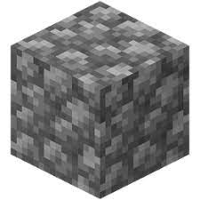
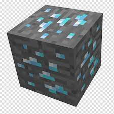

Bem vindo a loja de produtos quadriculados! confiras todos os nossos incríveis produtos que estão a sua disposição,vamos conferir! Produtos a baixo!
 objeto mais duravel coletado por picaretas, otimo para construções e criação de ferramentas básicas clique aqui
objeto de média durabilidade, muito utilizado em criação de ferramentas, e também para construções clique aqui
 minério mais dificil de se achar na dimensão normal do jogo, utilizado principalmente na criação de ferramentas clique aqui
bloco mais dificil de se partir na dimensão normal, só pode ser obtido após ter uma picareta de diamante clique aqui